After completing this chapter, you will be able to:
Explain the Grammar of Graphics philosophy underlying ggplot2
Distinguish between mapping an aesthetic to a variable and setting it to a constant
Choose a chart type from the types of variables and the question being asked
Create common plot types: scatter plots, histograms, box plots, bar charts
Customize plots with colors, labels, scales, and themes
Use faceting to create multi-panel figures
Apply data visualization best practices, including honest axes and accessible colour
Recognize and avoid common visualization pitfalls
Save figures in the right format and resolution
12.1 Why Visualize Data?
Before diving into the mechanics of creating plots, it’s worth asking: why visualize data at all? Why not just report the numbers?
The answer lies in how our brains process information. The human visual system has evolved over millions of years to detect patterns, spot outliers, and perceive relationships. A well-designed visualization leverages this natural capability, allowing us to understand complex datasets almost instantly.
Consider the famous Anscombe’s Quartet—four datasets that have nearly identical summary statistics (same mean, variance, and correlation) but tell completely different stories when plotted (Figure 12.1):
# Anscombe's Quartet demonstrationanscombe_long <- anscombe |>pivot_longer(everything(),names_to =c(".value", "set"),names_pattern ="(.)(.)")ggplot(anscombe_long, aes(x = x, y = y)) +geom_point(size =2, color ="steelblue") +geom_smooth(method ="lm", se =FALSE, color ="coral") +facet_wrap(~set, ncol =2) +labs(title ="Anscombe's Quartet",subtitle ="Same mean, variance, and correlation—different stories") +theme_minimal()
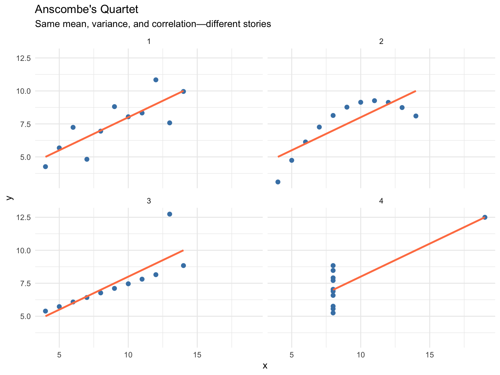
Figure 12.1: Anscombe’s Quartet: Four datasets with identical summary statistics but very different patterns
All four datasets have nearly identical statistical summaries, yet they represent fundamentally different phenomena: a linear relationship, a curved relationship, an outlier-driven relationship, and a vertical cluster with one outlier. This example powerfully demonstrates that summary statistics alone can hide important patterns. Visualization reveals what numbers cannot.
ImportantAlways Visualize Your Data
Never trust summary statistics alone. Before running any analysis, plot the data to check its shape, spot outliers, and understand the patterns you are about to model.
12.2 The Grammar of Graphics
ggplot2 is R’s most popular visualization package (Wickham, 2016), built on Leland Wilkinson’s “Grammar of Graphics”—a framework that describes the fundamental components from which every statistical graphic can be built. Just as grammar provides rules for constructing sentences from words, the grammar of graphics provides rules for constructing visualizations from components: data, aesthetic mappings that connect variables to visual properties, and geometric objects that represent the data, plus scales, statistical transformations, coordinate systems, and facets for finer control.
Seven Components of a Graphic
Every ggplot2 visualization is built from these components (Table 12.1 and Figure 12.2):
Table 12.1: Components of the Grammar of Graphics
Component
Description
Example
Data
The dataset being visualized
mtcars, iris
Aesthetics
Mappings from data to visual properties
x, y, color, size, shape
Geometries
Visual elements representing data
points, lines, bars
Facets
Subplots for data subsets
panels by category
Statistics
Transformations of data
binning, smoothing
Coordinates
The coordinate system
Cartesian, polar
Themes
Non-data visual elements
fonts, backgrounds
Figure 12.2: The Grammar of Graphics framework
12.3 Building a Plot Layer by Layer
ggplot2 builds plots incrementally using the + operator (Figure 12.3):
# Start with data and aestheticsggplot(data = mtcars, aes(x = wt, y = mpg)) +# Add a geometry layergeom_point()
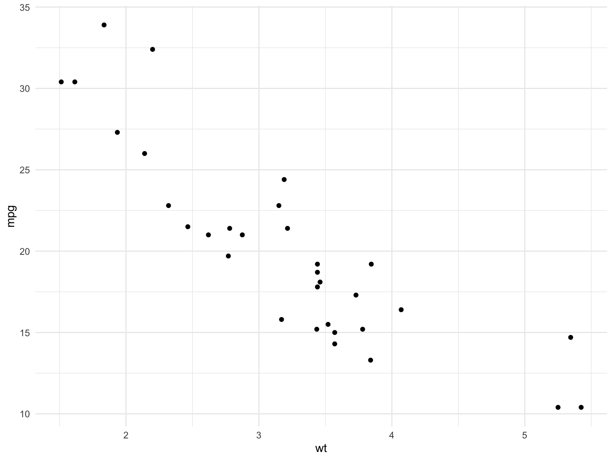
Figure 12.3: A minimal ggplot2 scatter plot of car weight against fuel efficiency
Let’s break this down:
ggplot() initializes the plot with data
aes() maps variables to visual properties (aesthetics)
One of the most important decisions in visualization is selecting the appropriate chart type for your data and message. Different charts excel at different tasks (Table 12.2):
Table 12.2: Matching questions to chart types
Question
Chart Type
Why
How are values distributed?
Histogram, density plot
Shows shape, center, spread
How do groups compare?
Box plot, bar chart
Side-by-side comparison
How do two variables relate?
Scatter plot
Shows correlation, patterns
How does a value change over time?
Line plot
Connects sequential observations
What is the composition?
Stacked bar, pie chart
Shows parts of a whole
ImportantStart with the Question
Before creating any visualization, ask yourself: “What question am I trying to answer?” The chart type should emerge from the question, not the other way around.
The second input to the decision is the type of each variable you want to show (Section 11.6). Figure 12.4 walks through the choice:
One categorical variable: bar chart of counts
One continuous variable: histogram or density plot
One continuous and one categorical: box plots or violin plots side by side
Two continuous variables: scatter plot, with a line if the x variable is ordered (time)
Two categorical variables: grouped or stacked bar chart, or a heat map of counts
Three or more variables: map the extras to colour, shape, or size, or split them into facets (Section 12.7)
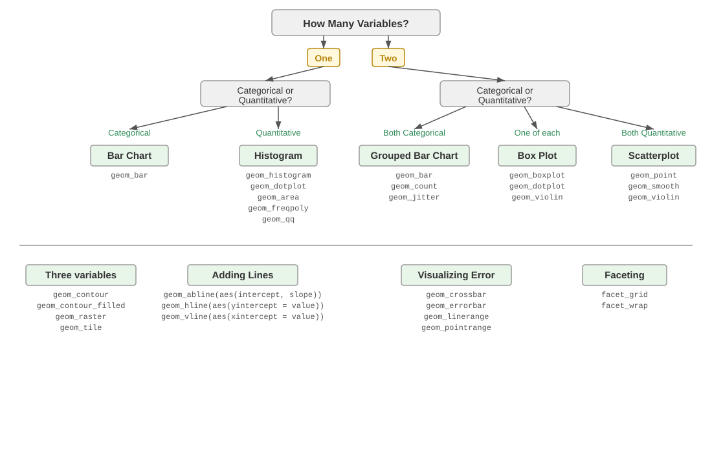
Figure 12.4: A flow chart for choosing a plot type from the number and types of variables to display.
12.5 Essential Geoms
Scatter Plots with geom_point()
Scatter plots show relationships between two continuous variables:
ggplot(mtcars, aes(x = wt, y = mpg)) +geom_point() +labs(title ="Fuel Efficiency vs. Weight",x ="Weight (1000 lbs)",y ="Miles per Gallon" )
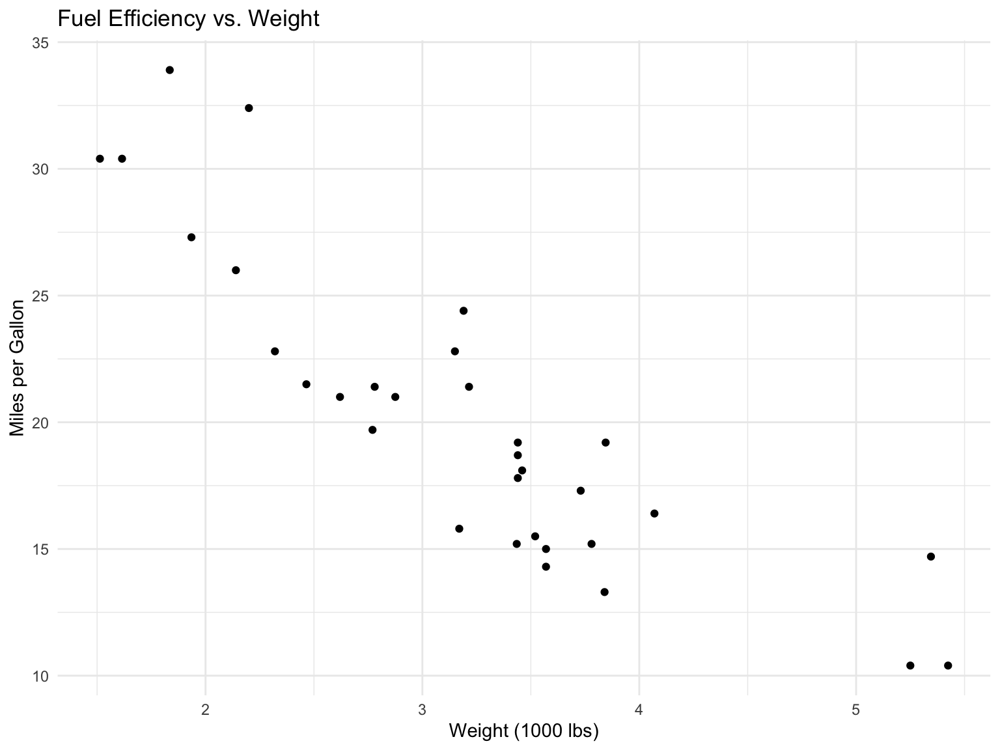
Figure 12.5: Relationship between car weight and fuel efficiency
Adding Color and Shape
Map additional variables to aesthetics:
ggplot(mtcars, aes(x = wt, y = mpg, color =factor(cyl))) +geom_point(size =3) +labs(title ="Fuel Efficiency by Weight and Cylinders",x ="Weight (1000 lbs)",y ="Miles per Gallon",color ="Cylinders" )
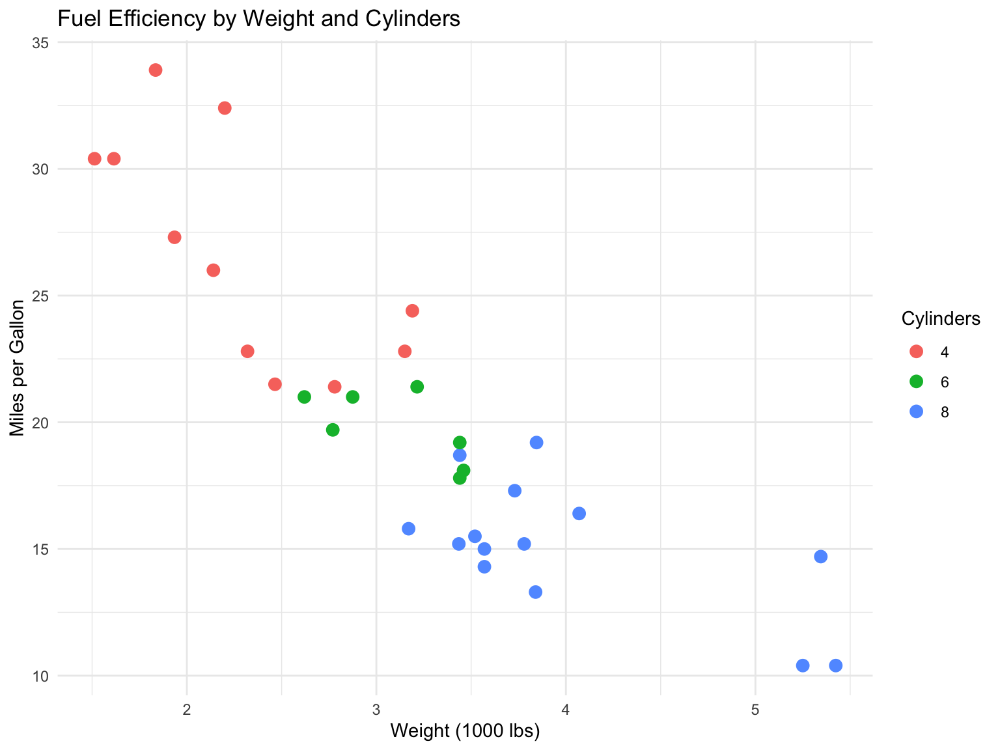
Figure 12.6: Scatter plot with color representing cylinders
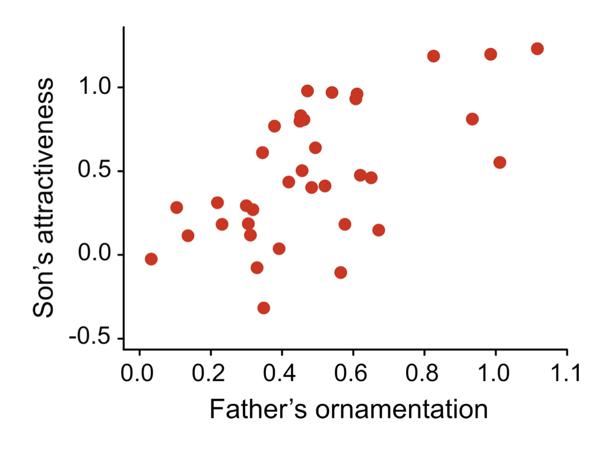
Figure 12.7: Scatter plots are excellent for exploring relationships between two continuous variables. This example shows a positive correlation between two traits, demonstrating how scatter plots can reveal patterns in biological data.
Mapping vs. Setting Aesthetics
The example above illustrates the single most common ggplot2 confusion. An aesthetic written insideaes() is mapped to a variable: ggplot2 picks a scale, assigns a different value to each level, and draws a legend. An aesthetic written outsideaes(), as a plain argument to the geom, is set to a constant that applies to every observation.
library(patchwork)p_mapped <-ggplot(mtcars, aes(x = wt, y = mpg, color =factor(cyl))) +geom_point(size =3) +labs(title ="Mapped: color = factor(cyl)", color ="Cylinders")p_set <-ggplot(mtcars, aes(x = wt, y = mpg)) +geom_point(size =3, color ="steelblue") +labs(title ="Set: color = \"steelblue\"")p_mapped + p_set
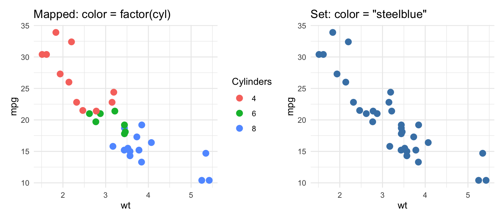
Figure 12.8: Left: colour mapped to a variable inside aes(), producing a legend. Right: colour set to a constant outside aes().
A classic mistake is writing aes(color = "blue"): ggplot2 treats the string "blue" as a one-level variable, maps it to the first colour of the default palette (salmon), and adds a legend labelled “blue”. If you want every point the same colour, keep the argument outside aes(). The same logic applies to size, shape, alpha (transparency, useful for overlapping points), fill, and linetype.
Histograms with geom_histogram()
Histograms show the distribution of a single continuous variable:
ggplot(diamonds, aes(x = price)) +geom_histogram(binwidth =500, fill ="steelblue", color ="white") +labs(title ="Distribution of Diamond Prices",x ="Price (USD)",y ="Count" )
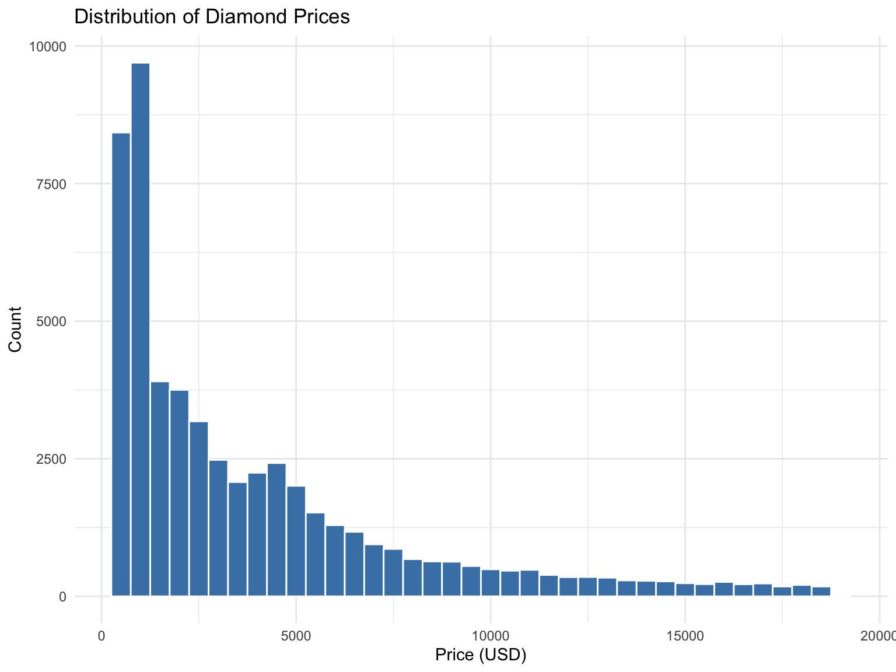
Figure 12.9: Distribution of diamond prices
Frequency Polygons with geom_freqpoly()
Frequency polygons are an alternative to histograms, showing counts as lines instead of bars. They’re especially useful for comparing multiple distributions:
ggplot(diamonds, aes(x = price, color = cut)) +geom_freqpoly(binwidth =1000, linewidth =1) +labs(title ="Price Distribution by Cut Quality",x ="Price (USD)",y ="Count" )
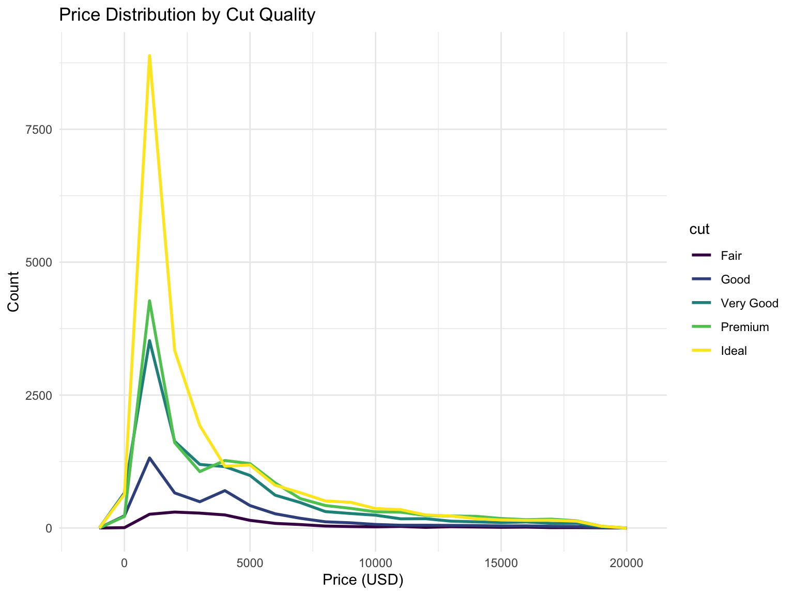
Figure 12.10: Comparing distributions with frequency polygons
Density Plots with geom_density()
Smoothed version of histograms:
ggplot(diamonds, aes(x = price, fill = cut)) +geom_density(alpha =0.5) +labs(title ="Price Distribution by Cut Quality",x ="Price (USD)",y ="Density" )
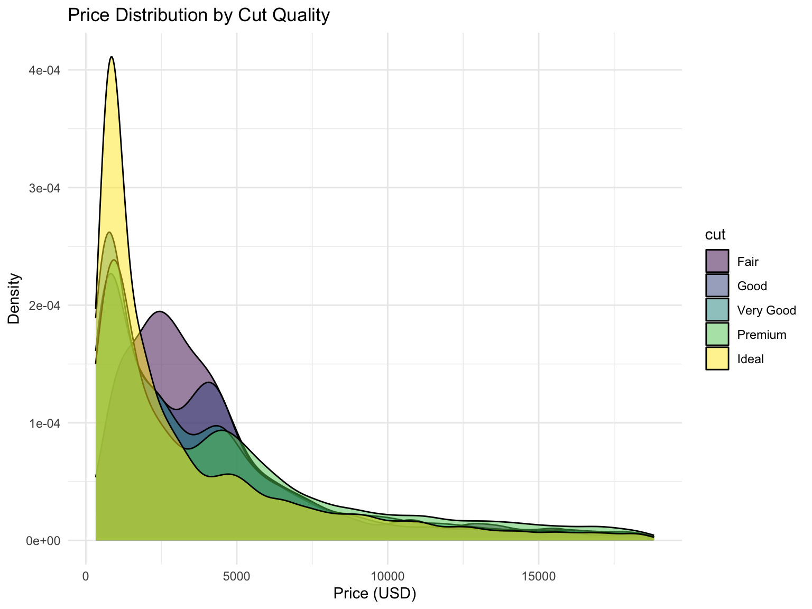
Figure 12.11: Density plot comparing distributions by cut quality
Box Plots with geom_boxplot()
Box plots show distribution summaries (Figure 12.13) and are excellent for comparisons:
ggplot(mtcars, aes(x =factor(cyl), y = mpg, fill =factor(cyl))) +geom_boxplot(show.legend =FALSE) +labs(title ="Fuel Efficiency by Cylinder Count",x ="Number of Cylinders",y ="Miles per Gallon" )
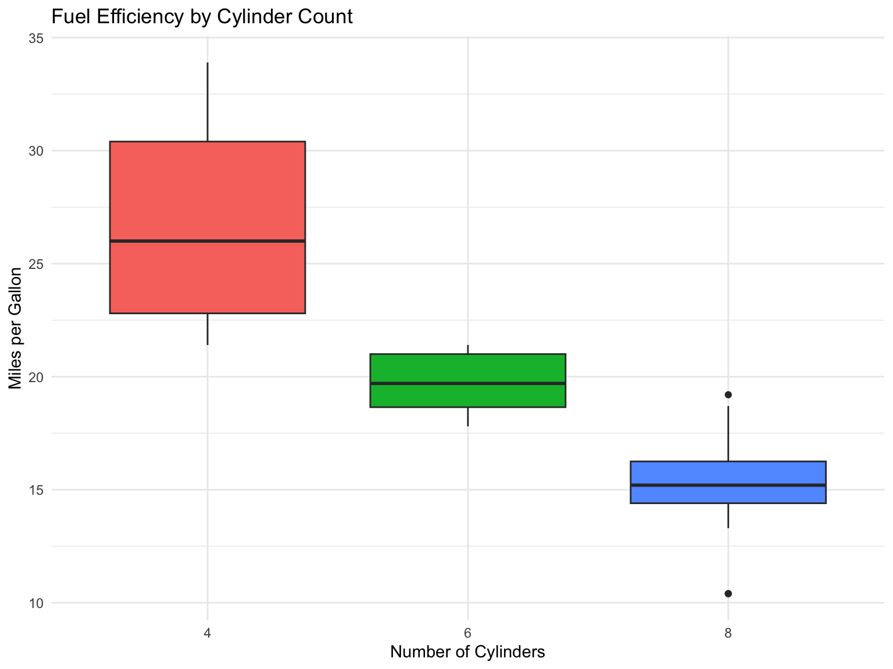
Figure 12.12: Fuel efficiency by number of cylinders
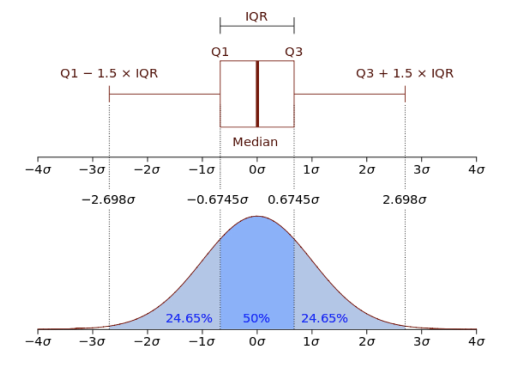
Figure 12.13: Anatomy of a box plot
Bar Charts with geom_bar() and geom_col()
Use geom_bar() for counts and geom_col() for values:
ggplot(diamonds, aes(x = cut, fill = cut)) +geom_bar(show.legend =FALSE) +labs(title ="Diamond Count by Cut Quality",x ="Cut",y ="Count" )
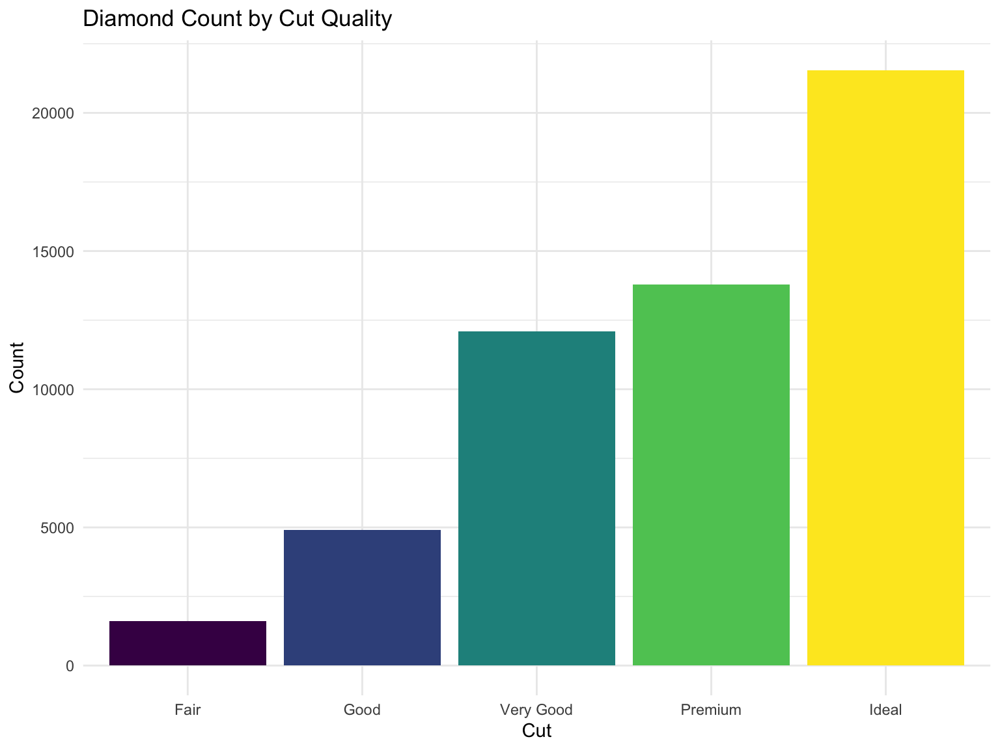
Figure 12.14: Count of diamonds by cut quality
Grouped Bar Charts with position = "dodge"
When you have two categorical variables, use position = "dodge" to place bars side-by-side:
ggplot(diamonds, aes(x = cut, fill = clarity)) +geom_bar(position ="dodge") +labs(title ="Diamond Count by Cut and Clarity",x ="Cut",y ="Count" )
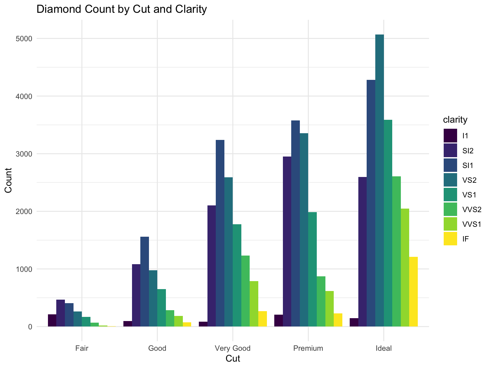
Figure 12.15: Grouped bar chart showing cut quality by clarity
Horizontal Bar Charts with coord_flip()
For long category names or many categories, flip the coordinates to make labels readable:
ggplot(mpg, aes(x = class, fill = class)) +geom_bar(show.legend =FALSE) +coord_flip() +labs(title ="Vehicle Count by Class",x =NULL,y ="Count" )
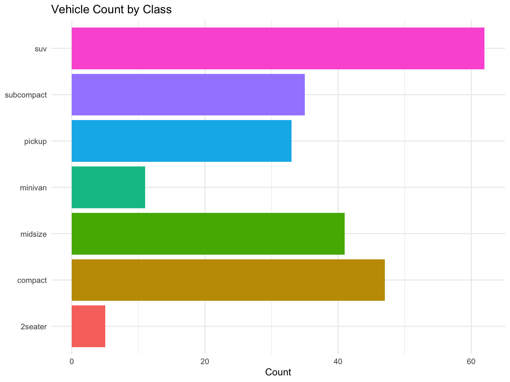
Figure 12.16: Horizontal bar chart for better label readability
Line Plots with geom_line()
Line plots are ideal for time series or connected observations:
# Create sample time series dataset.seed(42)time_data <-tibble(day =1:30,value =cumsum(rnorm(30)))ggplot(time_data, aes(x = day, y = value)) +geom_line(color ="darkblue", linewidth =1) +geom_point(color ="darkblue") +labs(title ="Simulated Time Series",x ="Day",y ="Value" )
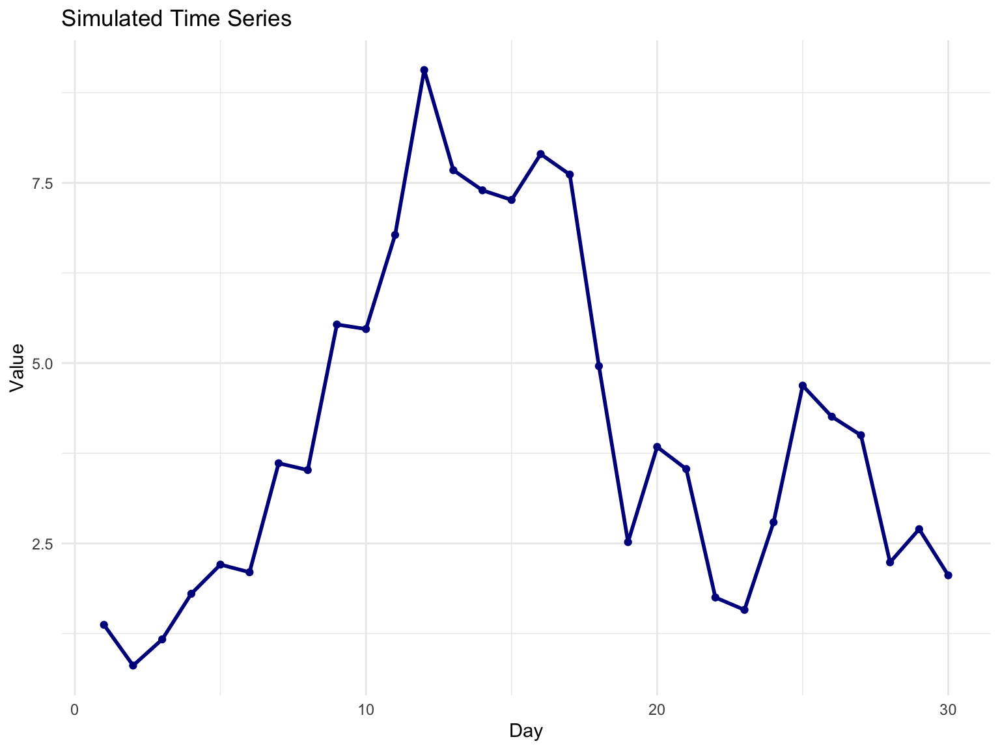
Figure 12.17: Example line plot
12.6 Combining Geoms
Layer multiple geoms to create richer visualizations:
ggplot(mtcars, aes(x = wt, y = mpg)) +geom_point(aes(color =factor(cyl)), size =3) +geom_smooth(method ="lm", se =TRUE, color ="black") +labs(title ="Weight vs. MPG with Linear Trend",x ="Weight (1000 lbs)",y ="Miles per Gallon",color ="Cylinders" )
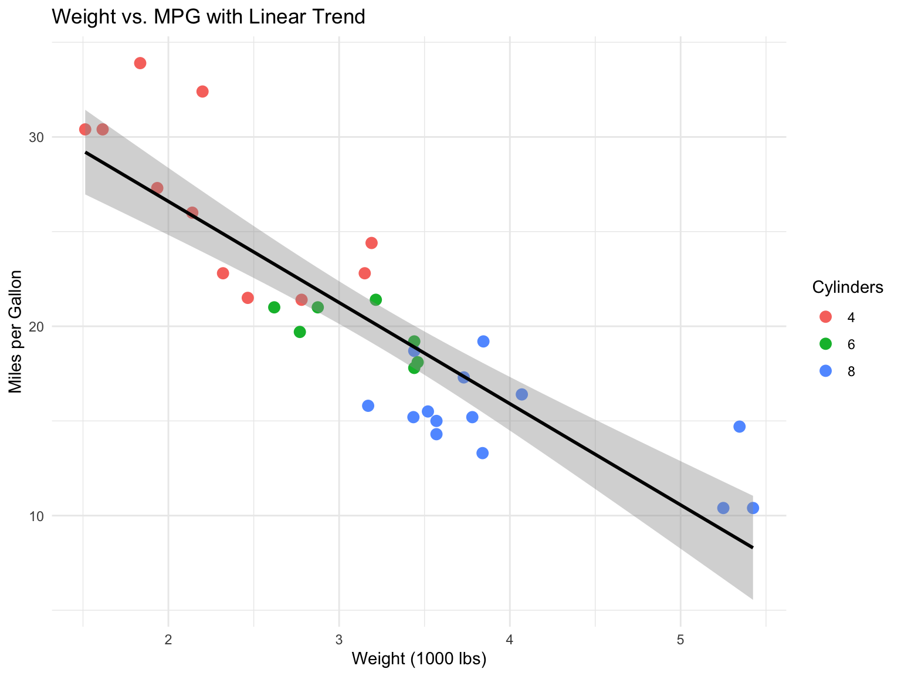
Figure 12.18: Scatter plot with trend line
Notice that the colour mapping is placed inside geom_point() rather than in ggplot(), so it applies only to the points; the trend line is drawn once for all the data. Aesthetics in ggplot() are inherited by every layer, while aesthetics in a geom apply to that layer alone. With no method argument, geom_smooth() fits a LOESS curve (or a GAM for large data) and shades its confidence band; method = "lm" asks for a straight line instead.
WarningChoose Appropriate Models
When adding trend lines or smoothing to your data, choose methods that match your data structure and research questions. Overfitting with overly complex models can obscure real patterns rather than reveal them (Figure 12.19).
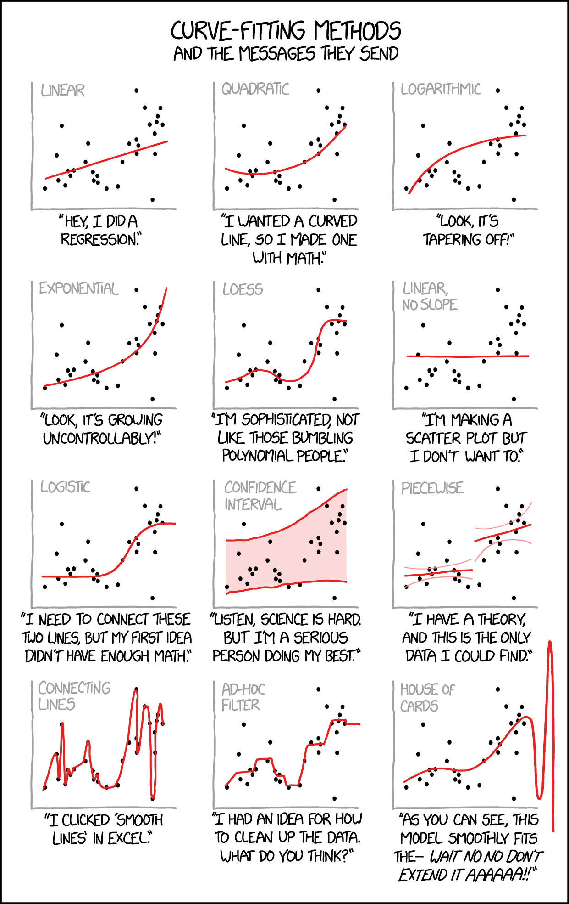
Figure 12.19: Different curve-fitting methods send different messages about your data. Choose methods that match your hypotheses and data characteristics, not just what makes the prettiest curve. Source: xkcd.com
12.7 Faceting: Small Multiples
Faceting creates separate panels for subsets of data. The result is a set of small multiples—the same chart repeated for each subset—which Edward Tufte called “the best design solution for a wide range of problems in data presentation.” Small multiples work because the eye can scan and compare panels quickly, every panel shares the same axes so comparisons are fair, and patterns or outliers stand out through repetition. Faceting is usually the best way to add a third (categorical) variable to a plot, and it scales far better than piling more colours and shapes into one panel.
facet_wrap() for One Variable
ggplot(mtcars, aes(x = wt, y = mpg)) +geom_point() +geom_smooth(method ="lm", se =FALSE) +facet_wrap(~cyl) +labs(title ="Fuel Efficiency by Weight (Panels by Cylinders)",x ="Weight (1000 lbs)",y ="Miles per Gallon" )
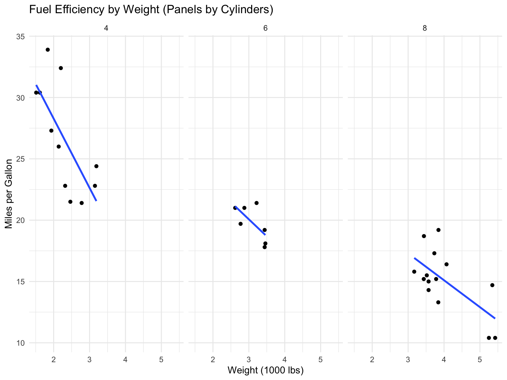
Figure 12.20: MPG vs weight, faceted by cylinder count
facet_grid() for Two Variables
ggplot(mtcars, aes(x = wt, y = mpg)) +geom_point() +facet_grid(am ~ cyl, labeller =labeller(am =c("0"="Automatic", "1"="Manual"),cyl =c("4"="4 cyl", "6"="6 cyl", "8"="8 cyl") )) +labs(title ="MPG by Weight, Transmission, and Cylinders",x ="Weight (1000 lbs)",y ="Miles per Gallon" )
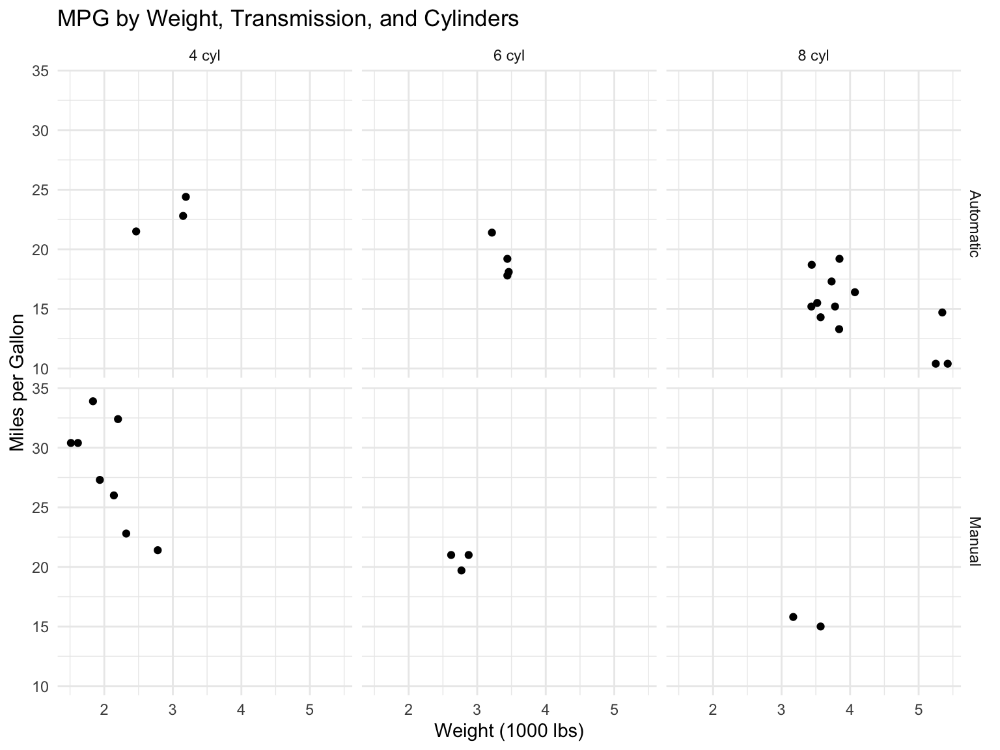
Figure 12.21: Two-dimensional faceting
By default every panel shares the same axis limits, which is what makes comparison fair. When the subsets have very different ranges, scales = "free" (or "free_x", "free_y") lets each panel choose its own; use it deliberately, because it removes exactly the shared reference that small multiples rely on.
12.8 Customizing Your Plots
Labels and Titles
ggplot(mtcars, aes(x = wt, y = mpg)) +geom_point() +labs(title ="Car Fuel Efficiency",subtitle ="Data from the 1974 Motor Trend magazine",x ="Weight (1000 lbs)",y ="Miles per Gallon",caption ="Source: mtcars dataset" )
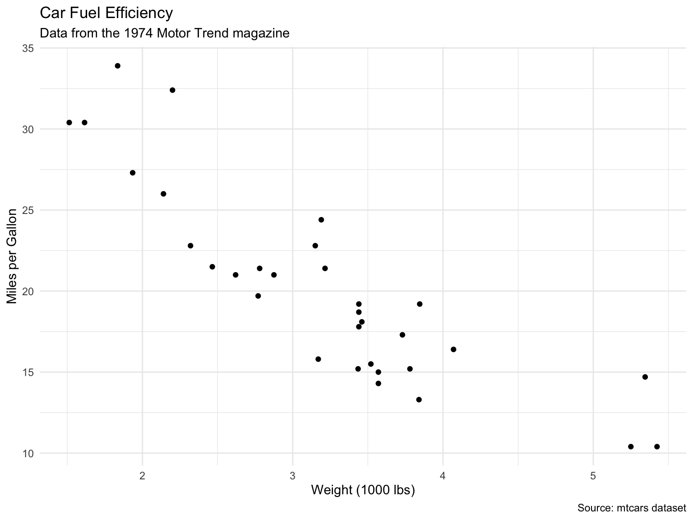
Figure 12.22: Plot with comprehensive labels
Themes
ggplot2 includes several built-in themes:
library(patchwork)p <-ggplot(mtcars, aes(x = wt, y = mpg)) +geom_point() +labs(title ="")p1 <- p +theme_gray() +labs(title ="theme_gray (default)")p2 <- p +theme_minimal() +labs(title ="theme_minimal")p3 <- p +theme_classic() +labs(title ="theme_classic")p4 <- p +theme_bw() +labs(title ="theme_bw")(p1 + p2) / (p3 + p4)
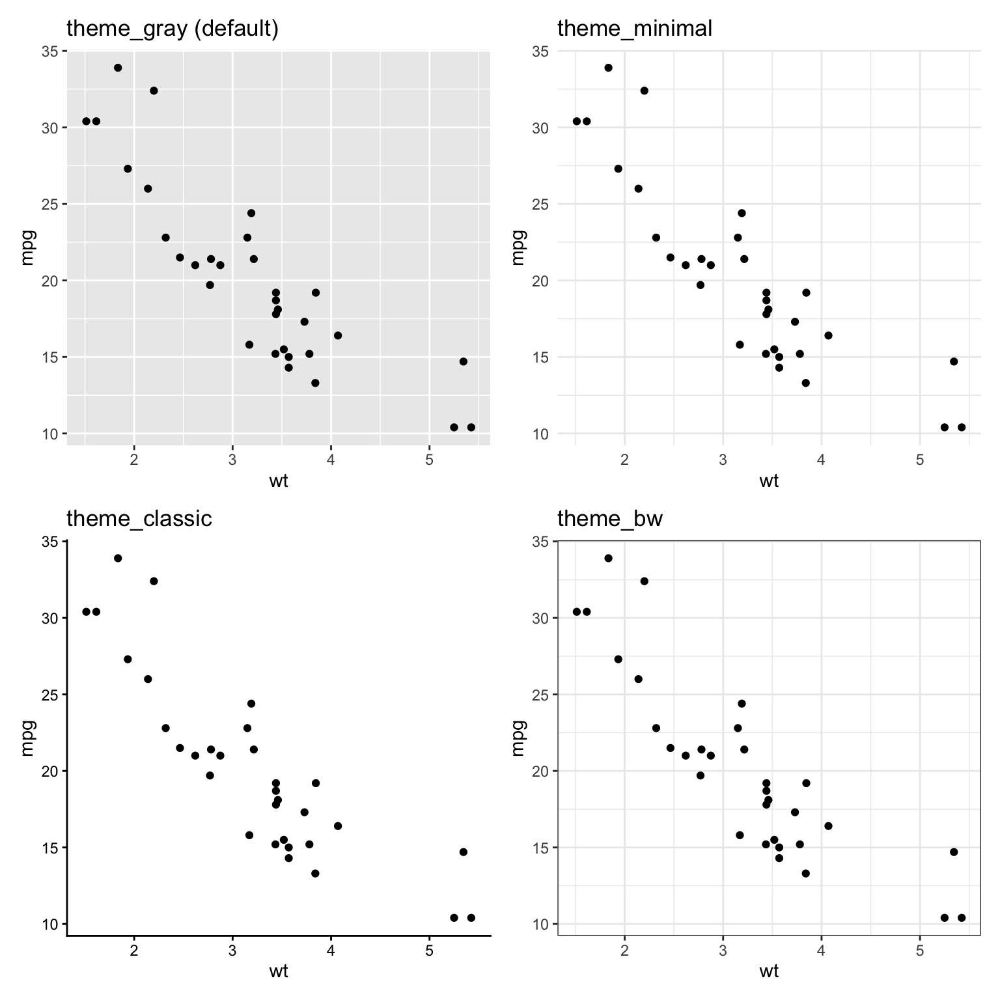
Figure 12.23: Comparison of ggplot2 themes
Other built-in themes include theme_light(), theme_dark(), and theme_void() (no axes at all, for maps and diagrams); the ggthemes package adds many more, including Tufte- and Economist-style themes. theme_set() at the top of a script or document, as in this chapter’s setup chunk, applies one theme to every plot that follows.
Fine-Tuning with theme()
Complete themes set everything at once; theme() adjusts individual elements. The most frequent use is rotating axis labels when categories have long names, followed by moving or removing the legend:
ggplot(mpg, aes(x = manufacturer, y = hwy, fill = drv)) +geom_boxplot() +labs(x =NULL, y ="Highway MPG", fill ="Drive") +theme_classic() +theme(axis.text.x =element_text(angle =45, hjust =1),legend.position ="bottom" )
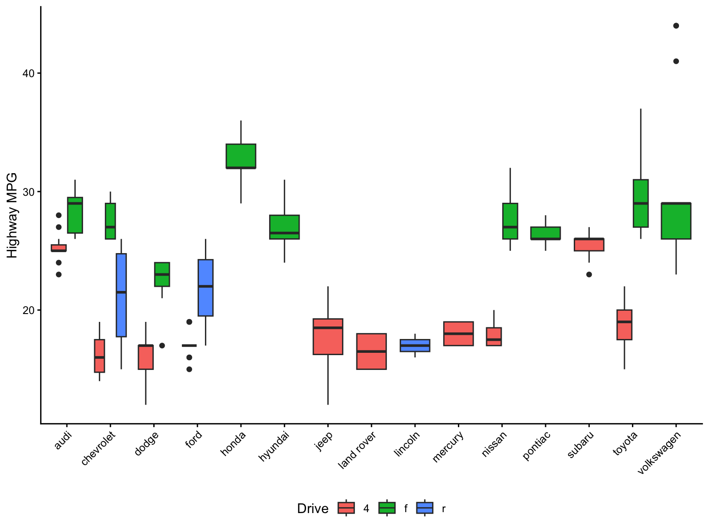
Figure 12.24: Rotated axis labels and a bottom legend via theme()
Elements are named by what they control (axis.text.x, panel.grid.minor, plot.title, strip.text) and are set with element_text(), element_line(), element_rect(), or element_blank() to remove them. theme() must come after a complete theme such as theme_classic(), otherwise the complete theme overwrites your tweaks.
Log Scales
Many biological quantities—gene expression, cell counts, concentrations, population sizes—span several orders of magnitude and are strongly right-skewed. On a linear axis a handful of large values squash everything else into a corner. scale_x_log10() and scale_y_log10() transform the axis while keeping the tick labels in the original units:
set.seed(123)expression_sim <-tibble(gene_a =rlnorm(200, meanlog =2, sdlog =1.5),gene_b =rlnorm(200, meanlog =3, sdlog =1.2))p_raw <-ggplot(expression_sim, aes(x = gene_a, y = gene_b)) +geom_point(alpha =0.5) +labs(title ="Linear axes", x ="Gene A expression", y ="Gene B expression")p_log <- p_raw +scale_x_log10() +scale_y_log10() +labs(title ="Log axes")p_raw + p_log
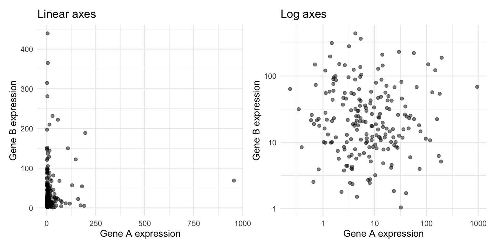
Figure 12.25: The same simulated expression data on linear axes (left) and log axes (right)
Reach for a log scale when the data span several orders of magnitude, when relationships are multiplicative (fold changes, ratios), or when a distribution has a long right tail. Label the axis so readers know the scale is transformed, and remember that zero and negative values cannot be shown on a log axis (log1p() or a pseudo-log scale, scale_y_continuous(transform = "pseudo_log"), handles counts that include zero).
Color Scales
Colour is the most powerful and the most misused aesthetic. The right scale depends on what kind of variable is mapped to it:
Qualitative scales, for categories with no order: distinct hues of similar brightness (scale_color_brewer(palette = "Set1"), scale_color_viridis_d())
Sequential scales, for ordered or continuous values running from low to high: one hue varying in lightness (scale_fill_viridis_c(), scale_fill_gradient())
Diverging scales, for values with a meaningful midpoint such as zero or a log fold change of 0: two hues diverging from a neutral centre (scale_fill_gradient2())
ggplot(mtcars, aes(x = wt, y = mpg, color =factor(cyl))) +geom_point(size =3) +scale_color_brewer(palette ="Set1") +labs(title ="Using Color Brewer Palette",color ="Cylinders" ) +theme_minimal()
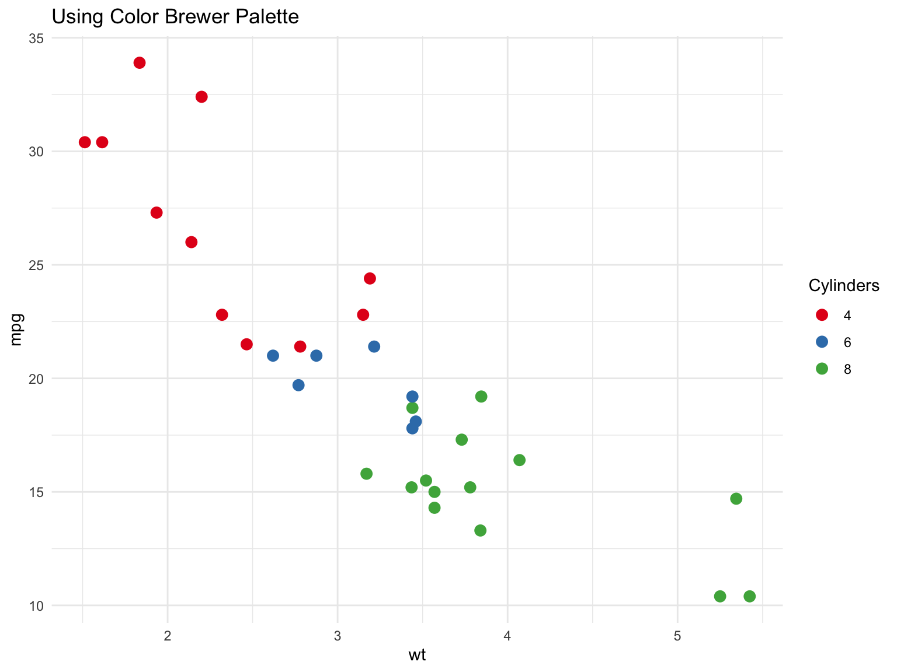
Figure 12.26: A qualitative ColorBrewer palette for an unordered categorical variable
p_seq <-ggplot(faithfuld, aes(waiting, eruptions, fill = density)) +geom_tile() +scale_fill_viridis_c() +labs(title ="Sequential", x ="Waiting (min)", y ="Eruption (min)")corr_df <-cor(mtcars[, 1:6]) |>as.table() |>as.data.frame() |>setNames(c("var1", "var2", "correlation"))p_div <-ggplot(corr_df, aes(var1, var2, fill = correlation)) +geom_tile() +scale_fill_gradient2(low ="steelblue", mid ="white", high ="firebrick",midpoint =0) +labs(title ="Diverging", x =NULL, y =NULL) +theme(axis.text.x =element_text(angle =45, hjust =1))p_seq + p_div
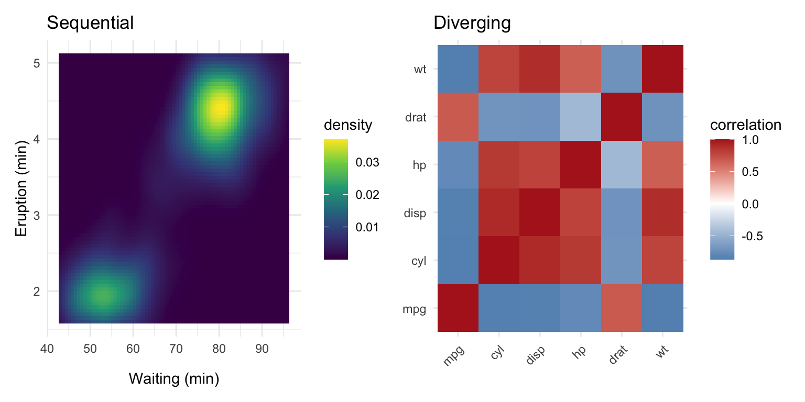
Figure 12.27: A sequential viridis scale for density (left) and a diverging scale centred on zero for correlations (right)
The scale_* function names follow a pattern: the aesthetic (color/colour or fill), then the palette family, then _d for discrete or _c for continuous data. Using a continuous scale on a factor, or vice versa, is a frequent source of errors.
WarningAvoid Rainbow Scales
Rainbow colour maps (MATLAB’s old “jet”, or rainbow() in base R) are not perceptually uniform: yellow looks brighter than blue, so equal steps in the data do not look like equal steps in colour, and sharp hue changes create boundaries that are not in the data. They are also unreadable for colour-blind viewers. Use viridis, plasma, or another perceptually uniform scale for continuous data.
12.9 Data Visualization Best Practices
Good data visualization communicates clearly and honestly. Edward Tufte, whose The Visual Display of Quantitative Information remains the standard reference, put it this way:
“Graphical excellence is that which gives to the viewer the greatest number of ideas in the shortest time with the least ink in the smallest space.”
His principles of graphical excellence are the ones that follow: show the data; encourage the eye to compare differences; represent magnitudes honestly; draw graphical elements clearly, minimizing clutter; and make displays easy to interpret.
Show the Data
“Above all else show the data.” Don’t hide your data behind summaries when individual points are informative:
ggplot(mtcars, aes(x =factor(cyl), y = mpg)) +geom_boxplot(outlier.shape =NA, fill ="lightblue") +geom_jitter(width =0.2, alpha =0.5) +labs(title ="Show the Data, Not Just the Summary",x ="Cylinders",y ="MPG" )
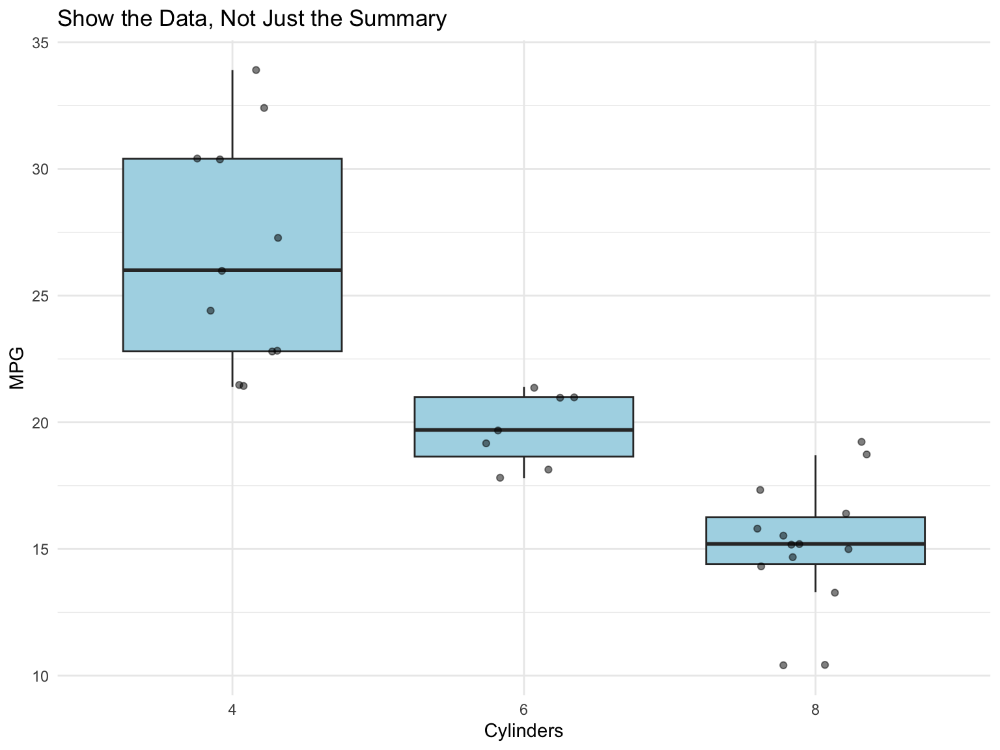
Figure 12.28: Showing raw data with summary statistics
Use Position and Length for Precision
Every chart encodes numbers as visual cues—position, length, angle, area, colour—and we do not read all cues equally well. Cleveland and McGill’s experiments ranked them from most to least accurately perceived:
Position along a common scale (scatter plots, dot plots)
Position along non-aligned scales (small multiples)
Length (bar charts)
Angle and slope (pie charts, some line charts)
Area (bubble charts, treemaps)
Volume (3D charts—avoid)
Colour saturation and hue (heat maps, choropleth maps)
Encode the quantity you most want the reader to compare using position or length, and keep colour and area for secondary information. This is why a bar chart beats a pie chart for the same data (Figure 12.29): the bars ask the eye to compare lengths against a common baseline, the pie asks it to compare angles.
funding <-tibble(field =c("Engineering", "Medicine", "Natural Sciences", "Social Sciences"),pct =c(35, 28, 22, 15))p_bar <-ggplot(funding, aes(x =reorder(field, pct), y = pct)) +geom_col(fill ="steelblue") +coord_flip() +labs(title ="Bar chart", x =NULL, y ="Funding (%)")p_pie <-ggplot(funding, aes(x ="", y = pct, fill = field)) +geom_col(width =1) +coord_polar("y") +labs(title ="Pie chart", fill =NULL) +theme_void() +theme(legend.position ="bottom")p_bar + p_pie
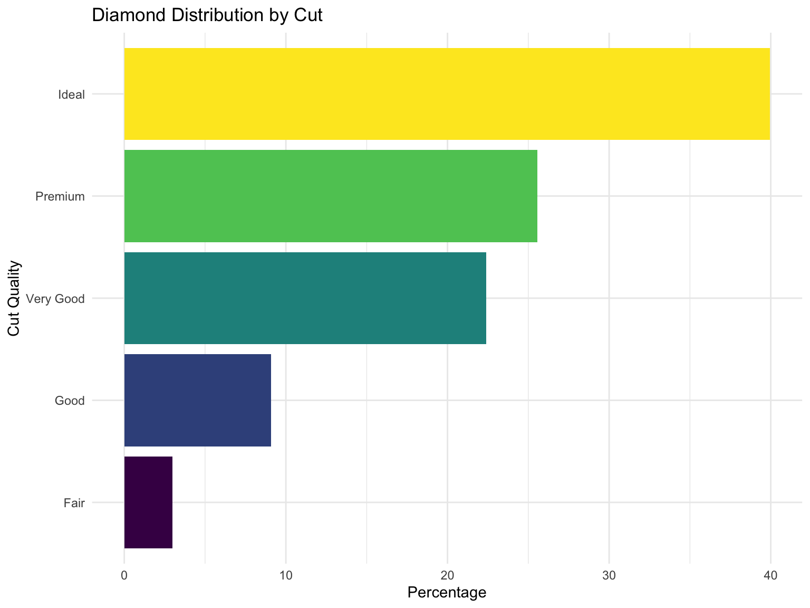
Figure 12.29: The same four values as a bar chart (lengths on a common scale) and a pie chart (angles): the ranking is instant on the left and requires effort on the right
WarningAvoid Pie Charts
Pie charts make comparisons difficult because humans are poor at judging angles, and they become unreadable beyond a handful of categories. Use bar charts (or dot plots) instead for categorical comparisons. Note that a pie chart in ggplot2 is literally a stacked bar in polar coordinates (coord_polar()), which shows how the grammar composes.
Order by Meaningful Values
By default, R orders categorical variables alphabetically, which is rarely meaningful. Use reorder() to order by a numeric value instead (the forcats tools in Section 11.14.2 do the same job for factors):
# Calculate mean mpg by manufacturermtcars_summary <- mtcars |>mutate(car =rownames(mtcars)) |>slice_head(n =10) |>mutate(car =reorder(car, mpg)) # Order car names by mpg valuesggplot(mtcars_summary, aes(x = car, y = mpg)) +geom_col(fill ="steelblue") +coord_flip() +labs(title ="Fuel Efficiency by Car (Ordered)",x =NULL,y ="Miles per Gallon" )
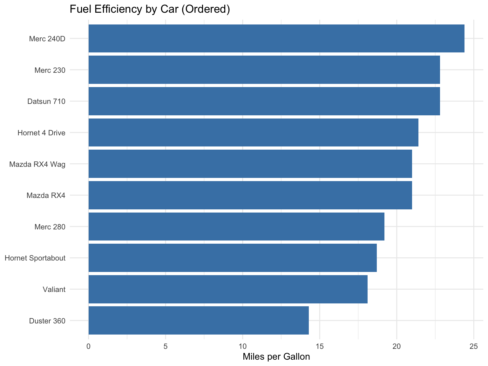
Figure 12.30: Ordering categories by value aids comparison
The reorder() function takes a categorical variable and a numeric variable, then reorders the categories by the numeric values. You can also specify a summary function when there are multiple values per category (Figure 12.31):
# Order vehicle class by median highway mpgggplot(mpg, aes(x =reorder(class, hwy, FUN = median), y = hwy)) +geom_boxplot(fill ="lightblue") +coord_flip() +labs(title ="Highway MPG by Vehicle Class",subtitle ="Ordered by median MPG",x =NULL,y ="Highway MPG" )
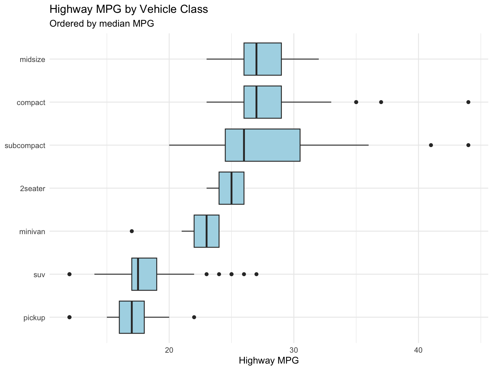
Figure 12.31: Highway MPG by vehicle class, with classes ordered by their median using reorder()
Represent Magnitudes Honestly: When to Include Zero
Whether the y-axis must start at zero is a perennial argument, and the answer depends on the encoding. In a bar chart the length of the bar is the magnitude, so a truncated axis misrepresents the data:
sales <-tibble(quarter =c("Q1", "Q2", "Q3"),revenue =c(100, 105, 109))p_trunc <-ggplot(sales, aes(x = quarter, y = revenue)) +geom_col(fill ="coral") +coord_cartesian(ylim =c(98, 110)) +labs(title ="Truncated axis: misleading", x =NULL, y ="Revenue")p_full <-ggplot(sales, aes(x = quarter, y = revenue)) +geom_col(fill ="coral") +labs(title ="Full axis: honest", x =NULL, y ="Revenue")p_trunc + p_full
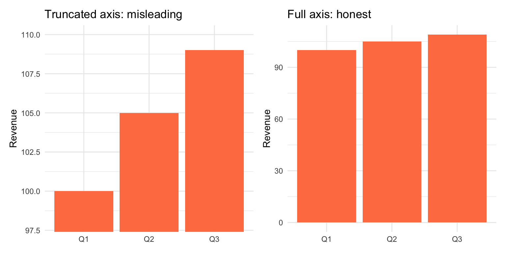
Figure 12.32: The same three values with a truncated axis (left) and a full axis (right). The left panel makes a 9% difference look like a several-fold one.
Note the mechanics: coord_cartesian(ylim = ...) zooms the view without discarding data, whereas ylim() or scale_y_continuous(limits = ...)drops observations outside the range, and for bars that silently removes every bar taller than the limit. Zoom with coord_cartesian() when you must.
For position-based encodings—line charts and scatter plots—the reader compares positions, not lengths, so forcing zero onto the axis can waste most of the plot and hide the variation you want to show:
set.seed(42)temps <-tibble(day =1:30, temp =rnorm(30, mean =22, sd =2))p_zero <-ggplot(temps, aes(x = day, y = temp)) +geom_line(color ="firebrick") +expand_limits(y =0) +labs(title ="Including zero: wastes space", y ="Temperature (°C)")p_auto <-ggplot(temps, aes(x = day, y = temp)) +geom_line(color ="firebrick") +labs(title ="Natural range: shows variation", y ="Temperature (°C)")p_zero + p_auto
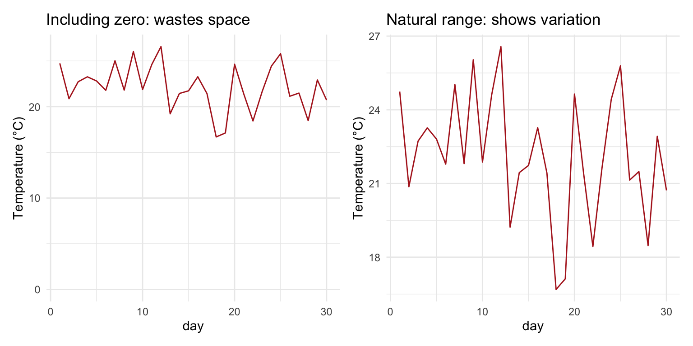
Figure 12.33: Daily temperatures with zero forced onto the axis (left) and on their natural range (right). Zero has no special meaning here, so the right panel is the better plot.
TipThe Zero Rule
Bar charts: always include zero; bar length is the magnitude
Line charts and scatter plots: include zero if it is meaningful for the variable (counts, proportions); otherwise show the natural range of the data
When in doubt: ask whether excluding zero could mislead a reader about the size of a difference. Figure 12.42 shows what happens when it does
Consider Color Blindness
About 8% of men and 0.5% of women have color vision deficiency. Use colorblind-friendly palettes:
# Colorblind-friendly colorscb_palette <-c("#E69F00", "#56B4E9", "#009E73", "#F0E442","#0072B2", "#D55E00", "#CC79A7")ggplot(mtcars, aes(x = wt, y = mpg, color =factor(cyl))) +geom_point(size =3) +scale_color_manual(values = cb_palette) +labs(title ="Using a Colorblind-Friendly Palette",color ="Cylinders" ) +theme_minimal()
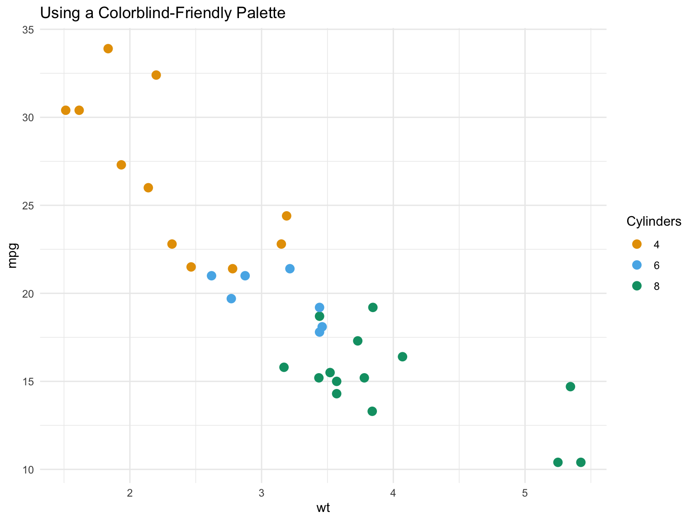
Figure 12.34: Colorblind-friendly palette
Tip
The viridis color scales (scale_color_viridis_d(), scale_fill_viridis_c()) are designed to be colorblind-friendly and perceptually uniform, and the palette above (Okabe and Ito’s) is the standard choice for up to eight categories. Avoid red versus green as the only distinguishing feature.
Better still, do not rely on colour alone. Mapping the same variable to both color and shape (or using facets) means the plot still works in greyscale and for every viewer:
Figure 12.35: Redundant encoding: drive type is mapped to both colour and shape, so the groups remain distinguishable without colour
Mapping one variable to two aesthetics produces a single merged legend, as long as both mappings use the same variable and the same legend title.
Avoid Chart Junk
Tufte’s data-ink ratio is the share of a graphic’s ink that actually represents data; the goal is to maximize it. Remove visual elements that convey no information:
Avoid 3D effects, which distort perception without adding anything
Remove unnecessary gridlines, borders, and backgrounds
Don’t use gradient fills for categorical data
Skip decorative elements, clip art, and heavy legends
Two further mistakes are common enough to name. Dual y-axes (two different scales on the left and right of the same panel) are almost always misleading: the relationship between the two scales is arbitrary, and by choosing the ranges you can make any two series appear to track, cross, or diverge. Facet the two variables instead, or plot one against the other. Overplotting—thousands of points drawn on top of one another so the dense regions look like a solid blob—hides the structure you are trying to show; Section 12.10.3 shows the remedies.
12.10 Common Visualization Tasks
Comparing Distributions
ggplot(iris, aes(x = Sepal.Length, fill = Species)) +geom_density(alpha =0.6) +scale_fill_brewer(palette ="Set2") +labs(title ="Sepal Length Distribution by Species",x ="Sepal Length (cm)",y ="Density" ) +theme_minimal()
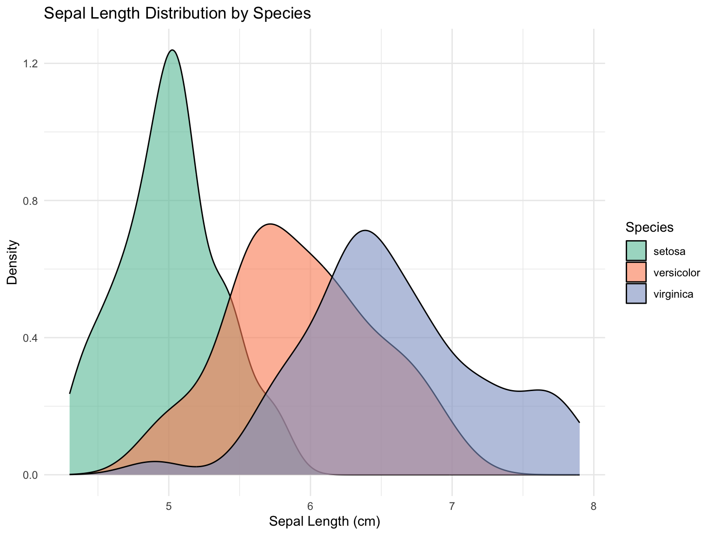
Figure 12.36: Comparing distributions with density plots
Before-After Comparisons
Slope charts effectively show changes between two time points:
Figure 12.37: Slope chart showing change over time
Dense Data and Overplotting
With thousands of observations, a plain scatter plot saturates. Three fixes, in increasing order of summarization: make the points transparent so density shows through, jitter or shrink them, or replace the points with a two-dimensional density estimate that draws the “third dimension” (how many points are here) as filled contours.
Figure 12.38: Five thousand points as opaque dots (left), with alpha = 0.1 (centre), and as filled 2D density contours with geom_density_2d_filled() (right)
geom_hex() and geom_bin_2d() do the same job with hexagonal or square bins and a colour scale for counts, which is often the clearest choice for very large datasets.
12.11 Examples of Poor Graphics
Recognizing bad graphics is the fastest way to learn not to make them. Each of the following breaks one of the principles above.
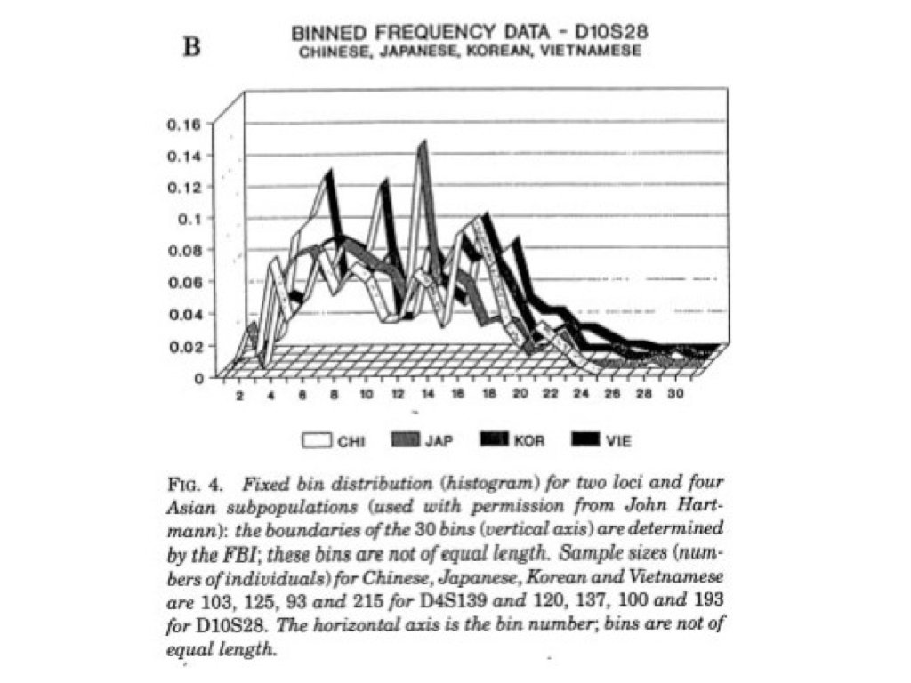
Figure 12.39: A “ticker tape” of unrelated values plotted side by side. There is no question this chart answers: the categories have no order, the lines imply a trend that does not exist, and the reader cannot compare anything.
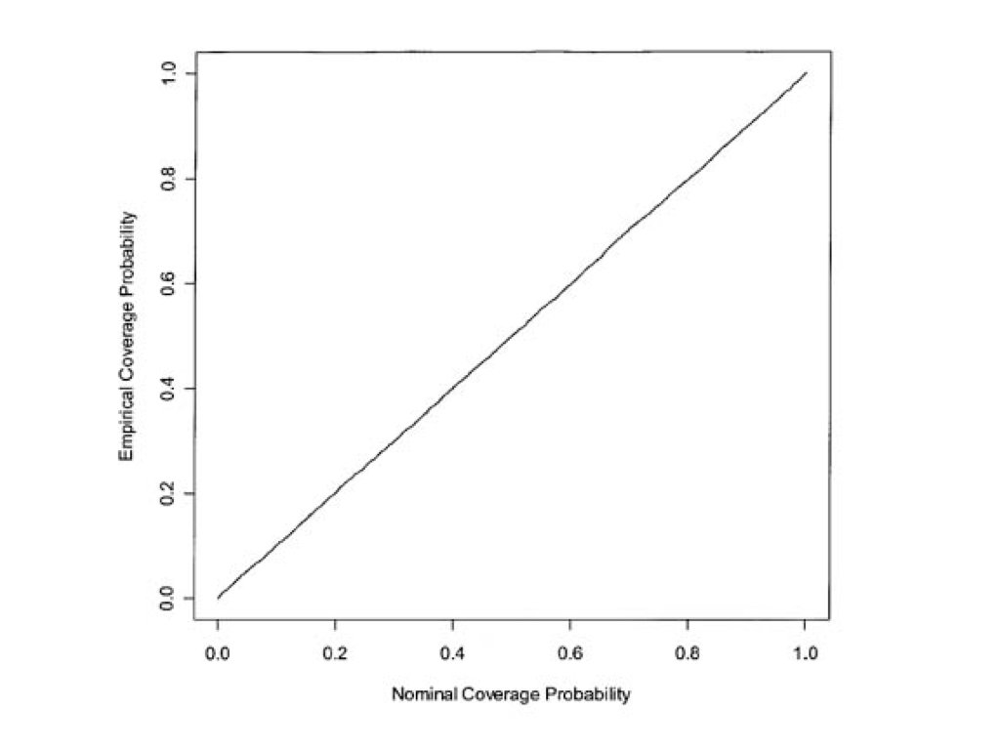
Figure 12.40: A line to no understanding: lines connect points that are not sequential observations, so the slopes between them mean nothing.
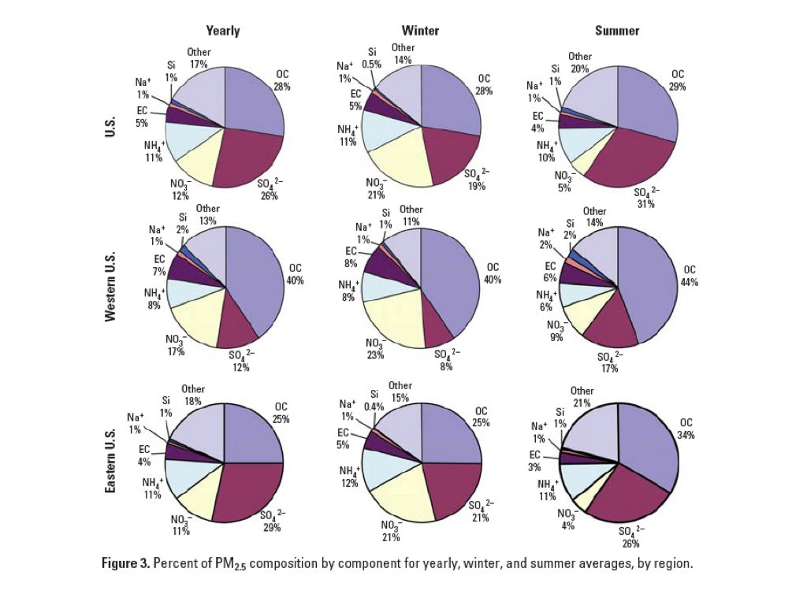
Figure 12.41: A bake sale of pie charts. Comparing angles within one pie is hard; comparing angles across many pies is nearly impossible. A single faceted bar chart or dot plot would show every comparison at once.
Truncated axes are the most common way a graphic misrepresents magnitudes. Figure 12.42 shows a widely circulated example: a television news graphic of the US unemployment rate whose y-axis started well above zero, so that a change of about one percentage point filled the whole chart, alongside the same data plotted honestly.
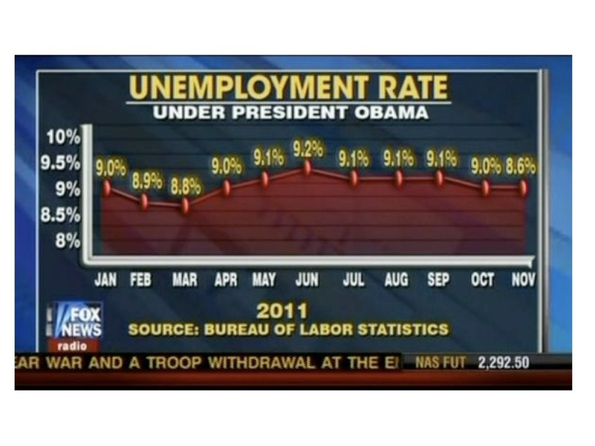
(a) As broadcast: the y-axis range is chosen so a small change looks enormous
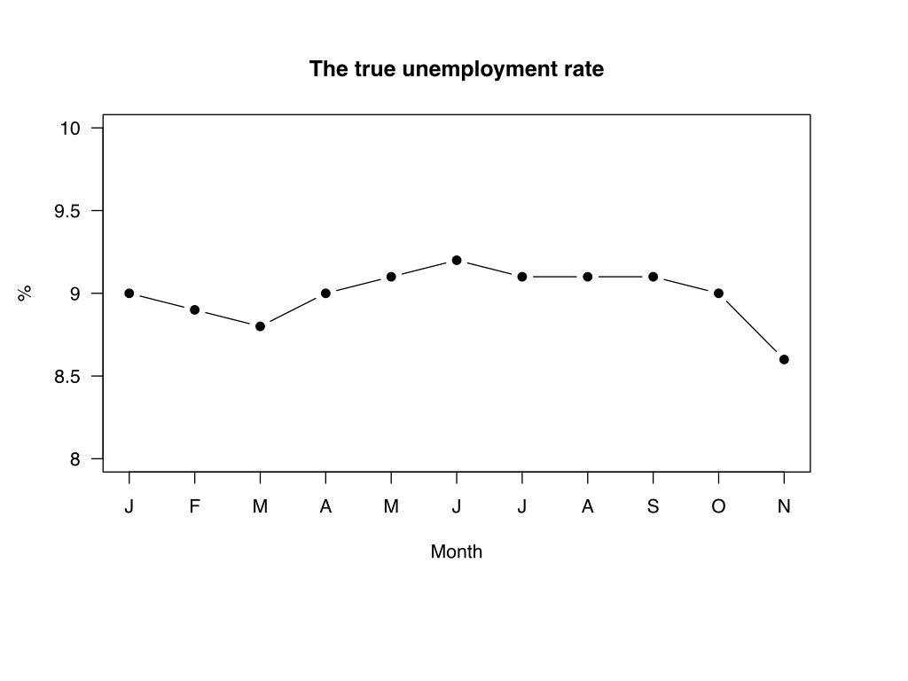
(b) The same data with an honest axis
Figure 12.42: A truncated y-axis (left) and the honest version (right). Source: Fox News, 2011; Bureau of Labor Statistics data.
“Graphical excellence begins with telling the truth about the data” (Tufte, 1983).
12.12 A Famous Good Example
Charles Joseph Minard’s 1869 map of Napoleon’s Russian campaign (Figure 12.43) is often cited as the best statistical graphic ever drawn. It displays six variables in a single coherent image: the size of the army (the width of the band), its position (latitude and longitude), the direction of movement (tan for the advance, black for the retreat), the temperature during the retreat (the line graph beneath), and the date.
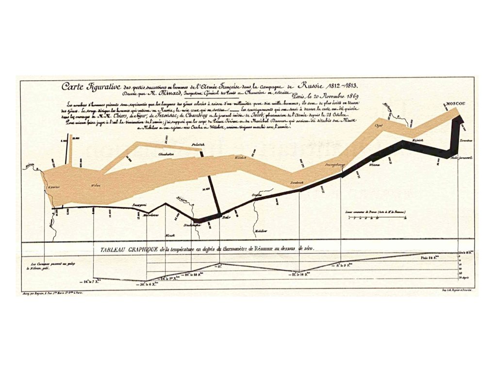
Figure 12.43: Minard’s 1869 map of Napoleon’s Russian campaign. Source: Charles Joseph Minard, 1869.
The graphic tells a story without a legend: the army shrinks as it advances, the retreat is devastating, and the losses track the plummeting temperature. Every one of Tufte’s principles is present—the data are shown, the eye is invited to compare the advance with the retreat, magnitudes are honest, there is no clutter, and the meaning is immediate. The same design has been reused for modern data (Figure 12.44), which shows that the idea is a general one: encode the most important quantity as position and width, and let secondary variables ride along as colour and annotation.
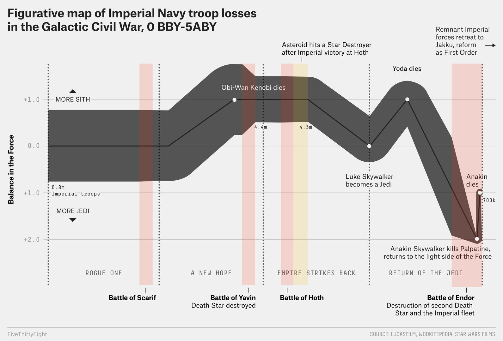
Figure 12.44: A modern recreation of Minard’s design applied to a different dataset. Source: FiveThirtyEight.
12.13 Saving Plots
Use ggsave() to export plots; in a Quarto document, figures are instead saved automatically at render time (Section 16.4.5):
# Create a plotp <-ggplot(mtcars, aes(x = wt, y = mpg)) +geom_point() +theme_minimal()# Save as PNG (good for web)ggsave("my_plot.png", plot = p, width =8, height =6, dpi =300)# Save as PDF (good for publications)ggsave("my_plot.pdf", plot = p, width =8, height =6)# Save as SVG (good for editing)ggsave("my_plot.svg", plot = p, width =8, height =6)
ggsave() infers the format from the file extension and, if plot is omitted, saves the last plot displayed. Always give explicit width and height (in inches by default) so that text and points are sized consistently between runs, and use dpi = 300 or higher for raster formats destined for print. Vector formats (PDF, SVG) scale without loss and are what journals usually ask for.
12.14 Summary
ggplot2 provides a powerful and consistent framework for data visualization:
Build plots layer by layer using the Grammar of Graphics
Map data to aesthetics (x, y, color, size, shape) inside aes(); set constants outside it
Add geometries to represent data visually
Use faceting to create multi-panel figures (small multiples)
Customize with themes, theme() tweaks, labels, log scales, and color scales matched to the variable type (qualitative, sequential, diverging)
Best practices for effective visualization:
Show the data when possible
Use position and length over angles and area; avoid pie charts
Order categories meaningfully
Include zero for bar charts; show the natural range for line and scatter plots
Use colorblind-friendly palettes and redundant encodings (colour plus shape)
Avoid chart junk, 3D effects, dual y-axes, and rainbow scales
Use transparency or 2D density for dense data
Save with explicit dimensions, and prefer vector formats for publication
Tip
For a reference of ggplot2 functions and R visualization commands, see Appendix C.
ggpubr Package — Publication-ready plots with statistical annotations
Exercises
TipPractice Exercises
Exercise 1: Basic Scatter Plot
Using the iris dataset: 1. Create a scatter plot of Sepal.Length vs Sepal.Width 2. Color points by Species 3. Add appropriate labels and a title
Exercise 2: Distribution Visualization
Using the diamonds dataset: 1. Create a histogram of carat 2. Experiment with different bin widths 3. Add a density curve overlay
Exercise 3: Grouped Comparisons
Using mtcars: 1. Create box plots of mpg grouped by cyl 2. Add jittered points to show individual observations 3. Use a colorblind-friendly palette
Exercise 4: Faceted Plot
Using the diamonds dataset: 1. Create a scatter plot of carat vs price 2. Facet by cut 3. Add a smoothed trend line to each panel
Exercise 5: Publication-Ready Figure
Create a polished figure using any dataset that includes: 1. Meaningful title and axis labels 2. A clean theme 3. Appropriate colors 4. No chart junk 5. Save it as a high-resolution PNG
Exercise 6: Mapped vs. Set
Plot hwy against displ from mpg with aes(color = "blue") inside aes() and explain what you see
Fix it so all points are blue
Map class to colour and drv to shape in one plot; then facet by drv instead and decide which is easier to read
Exercise 7: Scales and Honesty
Plot price against carat for diamonds with and without scale_x_log10() and scale_y_log10(); which reveals the relationship?
Make a bar chart of mean hwy by class and truncate the y-axis with coord_cartesian(); then repeat with ylim() and explain why the two differ
Find a chart in a news article or paper that violates one of the principles in Section 12.9, name the violation, and sketch (in ggplot2) how you would fix it